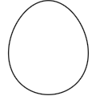
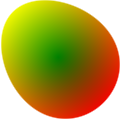
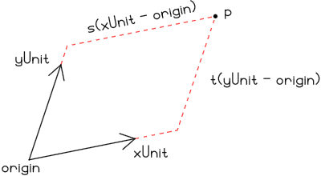
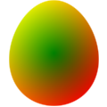
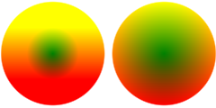
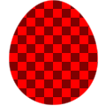
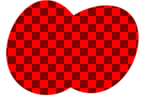
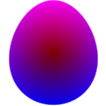

> import Graphics.Curves > import Data.NumInstances
FillColour attribute. The Texture attribute lets you specify a fill colour parameterised by a
pixel coordinate and a texture coordinate. The texture coordinate is given
relative to a customizable texture basis.
> egg = curve 0 (2 * pi) (\t -> > Vec (0.8 * cos t * (1 - 0.12 * sin t)) > (0.95 * sin t)) > `with` [ LineColour := transparent ]The rest of this page is dedicated to giving the egg pretty colours, but for reference, this is what it looks like with the
LineColour turned
back on.

Let's have a red texture which is darker closer to the center of the egg and a
green texture that grows darker towards the bottom. Adding1 them together produces a pretty yellow egg.
> redTex _ p = Colour (distance p 0) 0 0 1 > greenTex _ p = Colour 0 (0.5 + 0.5 * getY p) 0 1 > > redEgg = egg `with` [ Texture := redTex ] > greenEgg = egg `with` [ Texture := greenTex ] > yellowEgg = egg `with` [ Texture := redTex + greenTex ] > > eggs = redEgg <> translate (Vec 2 0) greenEgg > <> translate (Vec 4 0) yellowEgg

Texture coordinates are transformed together with the image, so the texture sticks with an object when it's transformed as you would expect.
> tilt = rotate (pi/4) yellowEgg
TextureBasis attribute of the image. A Basis
consists of three points, (origin, xUnit, and
yUnit) and describes a coordinate system with origin origin
and basis vectors xUnit - origin and yUnit - origin The
texture coordinate of a point p is Vec s t, where
> p == diag s * (xUnit - origin) + diag t * (yUnit - origin)In picture form:  The
toBasis and fromBasis functions lets you
convert between points in the defaultBasis and an arbitrary
basis.
With the theory out of the way, let's mess with the egg. Modifying the texture basis in effect applies the corresponding transformation to the texture. For instance, we can turn the egg texture upside down and move it slightly off-center as follows:
> upsideDown = yellowEgg `with` > [ TextureBasis :~ translate 0.2 . rotate pi ] When an image is transformed, the texture basis is also transformed2. This is true even if we haven't set a texture for the object, which can lead to slightly surprising behaviour in cases. Compare the two balls below
> scaled = (ball1 2 <> translate (Vec 4.3 0) ball2 2) > `with` [ Texture := redTex + greenTex > , LineColour := transparent ] > where > ball1 r = curve 0 (2 * pi) $ \t -> Vec (r * cos t) (r * sin t) > ball2 r = scale r (ball1 1) The left ball is drawn as a circle with radius two using
curve,
and the the right ball is circle with radius one scaled by a factor of two. The
difference between the two is that the the left ball has the default texture
basis and the right one a scaled-up basis. Of course, you can always reset the
texture basis of an object if it isn't what you want.
> scaled' = scaled `with` [ TextureBasis := newBasis ] > where > newBasis = translate (Vec 2.15 0) $ scale 3 defaultBasis
> ex4 = egg `with` [ Texture := \(Vec x y) _ -> > if even (floor (x / 10) + floor (y / 10)) > then Colour 1 0 0 1 > else Colour 0.5 0 0 1 ] Transforming the image has no effect on the pixel coordinates:
> ex5 = ex4 <> translate (Vec 1 0) (rotate (-pi/4) ex4)
FillColour and Texture attributes map to the same
underlying property. In fact setting the fill colour is (almost3) equivalent to setting the texture to a constant function. This means
that you can change the texture of an image by modifying the fill colour.
> purpleEgg = yellowEgg `with` > [ FillColour :~ \(Colour r g b a) -> Colour g b r a ]
▲ 1 Thanks to Conal Elliott's nifty NumInstances package.
▲ 2 This is what lets the texture stay with an object when it is transformed.
▲ 3 The only difference is that if the fill colour is set to transparent, the fill blur is not taken into account when computing the bounds of an image. Of course, if the texture attribute is set we can't decide4 if it's the constant transparent function.
▲ 4 Well I guess we could, since there are a finite5 number of texture function inputs. It would just take a while.
▲ 5 115792089237316195423570985008687907853269984665640564039457584007913129639936 to be precise.